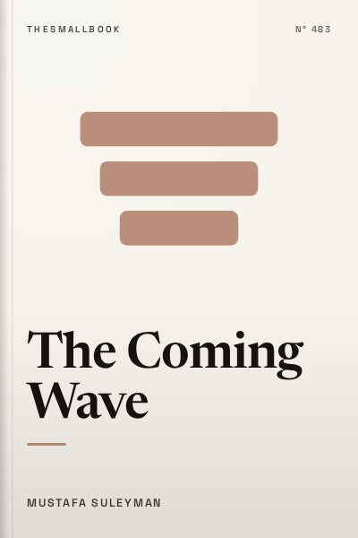

Library › Business & Startups
The Coming Wave - Summary & Key Lessons

AI, synthetic biology and the greatest dilemma of the 21st century: we cannot stop the wave, but we must contain it.
📖 OPEN THE FULL INTERACTIVE BREAKDOWN →🌐 Read it in Hindi, Hinglish, Gujarati, Tamil & 22 more languages, with audio.
💡 The Big Idea
Mustafa Suleyman, co-founder of DeepMind and later head of AI at Microsoft, argues that a coming wave of technologies, especially artificial intelligence and synthetic biology, will transform society. These technologies are general-purpose, spread quickly, become cheaper and can be used for both good and harm. History shows that technologies proliferate; they rarely stay contained. Yet uncontrolled spread could empower bad actors, destabilise states and create catastrophic risks. Suleyman calls this the containment problem and proposes ten steps, from safety research and audits to international cooperation, to keep the wave under control while still capturing its benefits.
🧠 The 10 Key Lessons
Lesson 1: Technology Comes in Waves
Part I: Homo Technologicus
Suleyman shows that major technologies arrive in waves that reshape society: fire, agriculture, writing, the printing press, steam engines, electricity, computers. Each wave spreads widely, becomes cheaper and changes how people live and work. Once a technology is useful, it tends to proliferate across the world regardless of attempts to control it. This pattern suggests that AI and biotechnology will also spread widely.
📖 Example: The printing press spread across Europe within decades after Gutenberg, despite efforts by authorities to control printing. Similarly, the internet spread worldwide far faster than governments could regulate it. Read the full example →
⚡ Do this: Think of one technology you use daily. Research how quickly it spread from invention to widespread use.
Lesson 2: The Containment Problem
Chapter 2: Endless Proliferation
Containment means keeping technology under meaningful human control. Suleyman argues that history offers few examples of successful containment. Even nuclear weapons, the most controlled technology, spread to several countries. AI and synthetic biology are much easier to copy and distribute, making containment harder. Yet failure to contain them could lead to serious harm.
📖 Example: Nuclear weapons required large facilities and rare materials, making control possible to some extent. In contrast, AI models can be copied and run on computers worldwide, and DNA synthesis tools are becoming cheaper. Read the full example →
⚡ Do this: Write down one benefit and one risk of AI that matter to you personally.
Lesson 3: AI and the Leap in Capability
Part II: The Next Wave
Suleyman describes how AI advanced from narrow systems to large language models capable of writing, coding and reasoning. AI is becoming more general and capable, able to act as an agent that plans and executes tasks. He predicts AI will become a powerful tool for productivity and science but also a source of risks, such as misinformation and automated cyberattacks.
📖 Example: DeepMind's AlphaGo defeated top Go player Lee Sedol in 2016, a milestone many experts thought was decades away. Later, AlphaFold predicted the structure of proteins, transforming biology research. Read the full example →
⚡ Do this: Try an AI tool for a task you find time-consuming. Note what it does well and where it fails.
Lesson 4: Synthetic Biology: Programming Life
Chapter 5: The Technology of Life
Advances in genetics and biotechnology allow scientists to read, write and edit DNA. Tools such as CRISPR make gene editing easier and cheaper. Synthetic biology could cure diseases, improve crops and create new materials. But it also raises risks, such as engineered pathogens. As tools become cheaper, more people can use them, increasing both benefits and dangers.
📖 Example: The cost of sequencing a human genome fell from billions of dollars in the early 2000s to a few hundred dollars today, enabling widespread research and medical applications. Read the full example →
⚡ Do this: Read about one medical breakthrough enabled by gene editing or synthetic biology.
Lesson 5: Four Features of the Wave
Chapter 6: The Wider Wave
Suleyman identifies four features that make the coming wave especially challenging: asymmetry (small groups can have large impact), hyper-evolution (rapid improvement), omni-use (applications in many fields) and autonomy (systems acting with less human oversight). These features make regulation and control difficult.
📖 Example: A small group with AI tools could create convincing misinformation at scale, showing how asymmetry allows a few actors to have outsized impact. Read the full example →
⚡ Do this: Practise checking sources: before sharing a viral video or claim, verify it with a trusted news source.
Lesson 6: States Under Pressure
Part III: States of Failure
Suleyman argues that the coming wave could weaken nation-states. AI and biotech may give powerful tools to companies, criminals and individuals, challenging governments' ability to maintain order. At the same time, governments might use AI for surveillance, threatening freedom. The challenge is to strengthen states without sliding into authoritarianism.
📖 Example: Ransomware attacks have disrupted hospitals and infrastructure in many countries, showing how small groups can cause large-scale harm. Read the full example →
⚡ Do this: Learn the basics of cybersecurity: use strong passwords, two-factor authentication and update your devices.
Lesson 7: The Narrow Path
Chapter 12: The Dilemma
Suleyman describes a dilemma: too little control risks catastrophe, too much control risks authoritarianism. He calls for a narrow path between these extremes, where technology is developed safely, with accountability and transparency, while preserving freedom and innovation.
📖 Example: Debates about AI regulation in the European Union, the United States and India reflect this dilemma, balancing innovation with safety and rights. Read the full example →
⚡ Do this: Read about one AI policy proposal in India or elsewhere. Write down whether you think it balances safety and innovation.
Lesson 8: Ten Steps Toward Containment
Part IV: Through the Wave
Suleyman proposes ten steps: technical safety research, audits, choke points on key resources, responsible developers, business incentives aligned with safety, government oversight, international alliances, a culture of responsibility, public movements and coherence across these efforts. No single step is enough, but together they could help.
📖 Example: AI companies and governments have begun creating safety institutes and testing frameworks for advanced AI models, reflecting some of these ideas. Read the full example →
⚡ Do this: If you build or use AI tools, adopt one responsible practice, such as clearly labelling AI-generated content.
Lesson 9: Why Pessimism Aversion Is Dangerous
Chapter 1: Containment Is Not Possible
Suleyman notes that people often avoid thinking about worst-case scenarios, a tendency he calls pessimism aversion. Technologists, in particular, prefer optimistic stories. But ignoring risks makes them more likely. Facing uncomfortable possibilities is necessary to prepare.
📖 Example: Before the COVID-19 pandemic, many experts warned about pandemic risks, but preparations were limited. Facing risks earlier could have reduced harm. Read the full example →
⚡ Do this: For one big decision you face, write down the worst realistic outcome and one way to reduce its risk.
Lesson 10: Hope Through Responsibility
Conclusion
Despite risks, Suleyman remains hopeful. AI and biotech could cure diseases, address climate change and improve lives. The key is responsibility: developers, governments and citizens must work together to guide technology toward positive outcomes. Everyone has a role in shaping the wave.
📖 Example: AI is already helping doctors detect diseases earlier and scientists design new materials. These benefits show why careful development matters. Read the full example →
⚡ Do this: Identify one way you could use AI responsibly to help others, such as tutoring, accessibility or community projects.
✅ 5-Step Action Plan
- Write one personal benefit and one risk of AI.
- Verify viral claims before sharing them.
- Turn on two-factor authentication for your main accounts.
- Read about one AI policy and form your own opinion.
- Label AI-generated content clearly when you share it.
⚠️ When This Doesn't Work
Suleyman is an AI industry insider, and critics note the tension between warning about AI risks and building powerful AI systems. His proposals are broad and sometimes vague about enforcement. The book also focuses on global powers; countries like India face different priorities, such as using AI for development while building regulatory capacity.
💀 The Graveyard Proves It
💬 Best Quotes from The Coming Wave
- “Containment is not, on the face of it, possible. And yet for all our sakes, containment must be possible.”
- “Technology's unavoidable challenge is that its makers quickly lose control over the path their inventions take once introduced to the world.”
- “The coming wave is defined by two core technologies: artificial intelligence and synthetic biology.”
Interactive version: mark lessons as read, listen in your language, share quote cards.